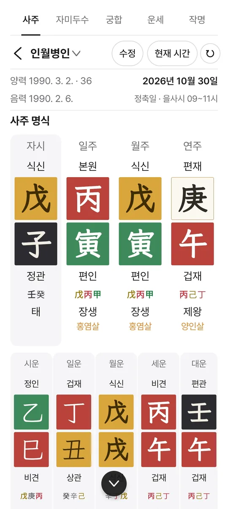
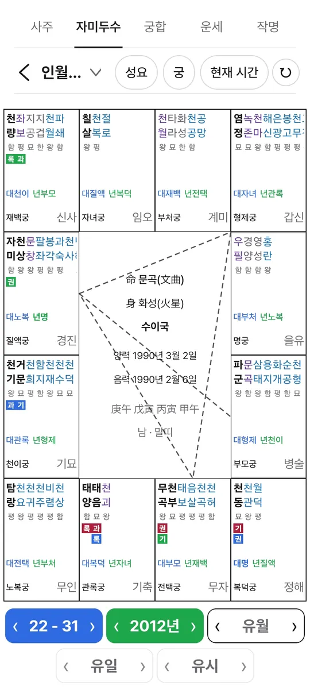
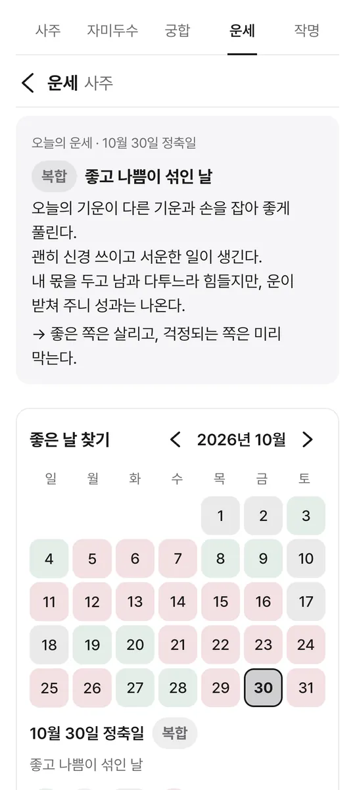
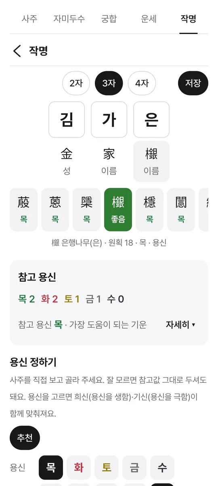

KJ 만세력
자미두수 · 사주 · 작명 · 운세
사주 명식과 자미두수 명반, 두 사람의 궁합과 작명, 한 해 열두 달의 운세를 한 앱에서.
출시 준비 중Android · Google Play
자미두수 · 사주 · 작명 · 운세
사주 명식과 자미두수 명반, 두 사람의 궁합과 작명, 한 해 열두 달의 운세를 한 앱에서.
출시 준비 중Android · Google Play



출생지 경도와 균시차, 서머타임까지 넣은 진태양시로 시주를 정해요. 절기는 태양 황경으로 직접 구합니다. 간지 여덟 글자로 생년월일을 거꾸로 찾을 수도 있어요.
네 기둥과 지장간·십성·12운성·신살. 대운에서 세운·월운·일운·시운까지 눌러 가며 봅니다.
12궁 명반과 별의 밝기, 선천·대한·유년 사화를 겹쳐 봅니다. 사주에서 고른 때가 명반에도 따라와요.
한 해 열두 달의 흐름, 오늘의 운세와 아침 알림, 좋은 날 찾기, 태어나서 80년의 인생 그래프.
두 사람의 사주와 명반을 나란히 놓고 같은 때로 봅니다. 사주에 맞춘 이름 추천과 감정, 감정서 PDF.
가족·친구·고객처럼 카테고리로 나눠 보관하고, 중요한 명식은 지문으로 잠가요. 명식마다 메모와 사건 기록.
만세력과 자미두수 명반, 올해와 작년 운세는 무료로 볼 수 있어요. 나머지는 통합 구독으로 열리며, 처음 구독하면 7일 동안 무료로 써 볼 수 있어요.